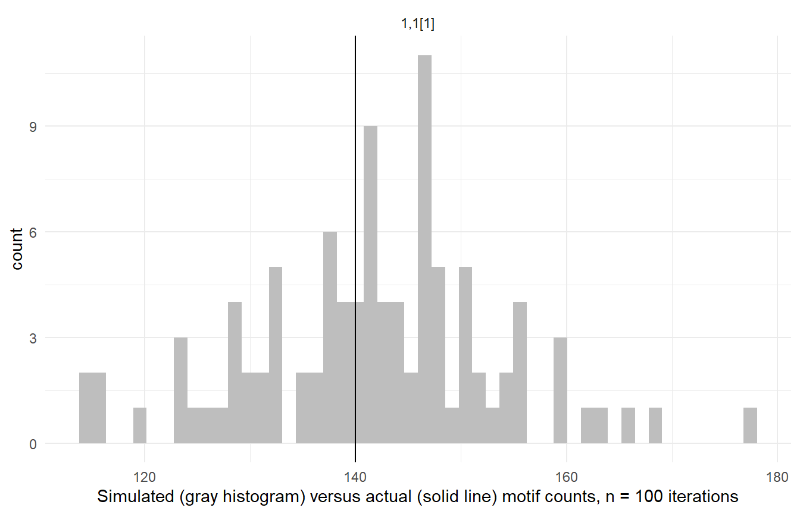
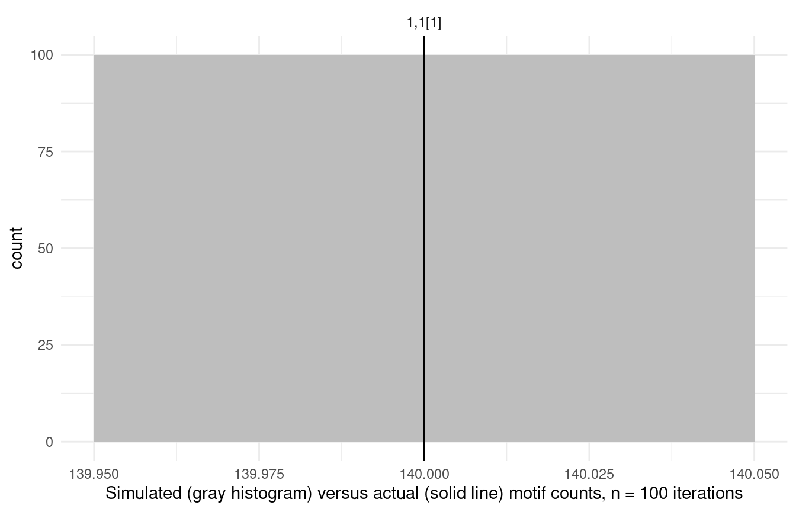

Random baselines
random_baselines.Rmd
This vignette describes the models used for random baselines in motifr. Baseline models have to be specified when requesting random networks (e.g., compare_to_baseline()), and when computing properties of motif distributions analytically (e.g, motif_distribution()).
Baseline models
Currently, three baseline models are implemented. The parameters of the models are extracted from a given (empirical) network.
-
Fixed Densities Model (
fixed_densities) Given two levels A and B, in this model it is assumed that the number of edges between level A and level B is fixed for all A-B ties. The specific number of edges is drawn randomly from the set of all possible edges. -
Erdős-Rényi Model (
erdos_renyi) In this model edges between the various levels are drawn independently at random with respect to a fixed probability depending on the levels. The (refined) Erdős-Rényi model accounts for the various levels by allowing to specify different probabilites ties occurring within different levels. -
Actor’s Choice Model (
actors_choice) In this model all edges but the edges on one specific level are fixed. This is motivated by theoretical considerations about the application of multi-level network models in situations where one level is composed of actors, which are more readily able to change their connections, and other levels considered more stable, eg. specific instances of ecological networks. The edges on this non-fixed “actor level” are chosen indepently with fixed probability as in Erdős-Rényi.
For details see the documentation of the Python sma package.
Motifs in networks simulated based on a baseline model
Motifs in random networks can be counted using simulate_baseline(). The supported models are erdos_renyi and fixed_densities. The function compare_to_baseline() can be used for plotting the results:
simulate_baseline(ml_net, motifs = list('1,2[I.C]', '1,2[II.C]'), n = 5) #> 1,2[I.C] 1,2[II.C] #> 1 178 20 #> 2 202 22 #> 3 113 8 #> 4 205 21 #> 5 218 22
Motif distributions without simulation
Expectations and variances in erdos_renyi and actors_choice can be computed analytically, i.e. without simulating hundreds of random networks. Until now variances can only be computed for 1,2-motifs.
motifs_distribution(ml_net, motifs=list('1,2[I.C]', '2,2[II.D]')) #> motif expectation variance #> 1,2[I.C] 1,2[I.C] 169.14423 949.7743 #> 2,2[II.D] 2,2[II.D] 68.83919 NaN
Difference between Erdős-Rényi and Fixed Densities
There is a crucial difference between the Erdős-Rényi model and Fixed Densities model. In the former, the expected number of edges on each level equals the number of edges in the empirical network, while in the latter the exact number in each random network equals this number. This difference becomes obvious when counting edges in random networks. For a network with two levels A and B 1,1[1] is the motif consisting of one node from level A and one from level B, linked by an edge.
compare_to_baseline(ml_net, motifs = list('1,1[1]'), model = 'erdos_renyi', n = 100)

compare_to_baseline(ml_net, motifs = list('1,1[1]'), model = 'fixed_densities', n = 100)
